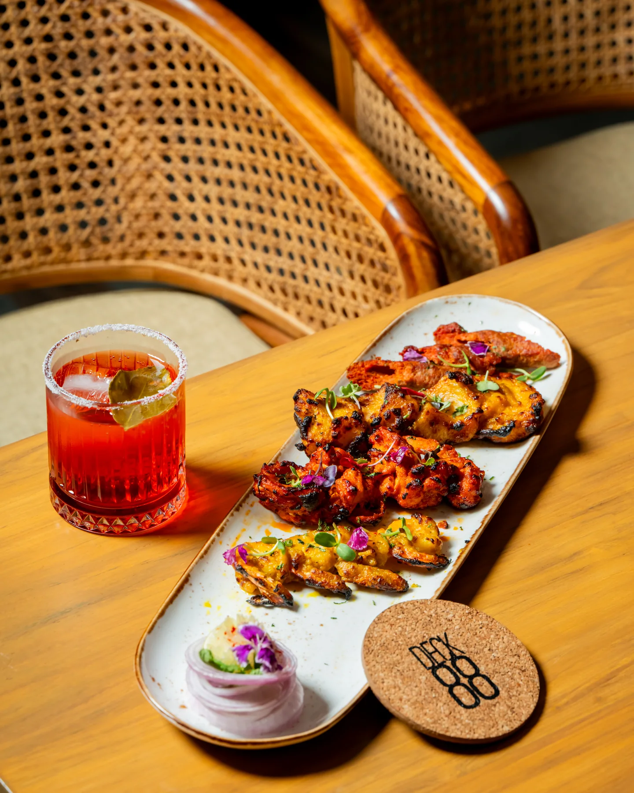
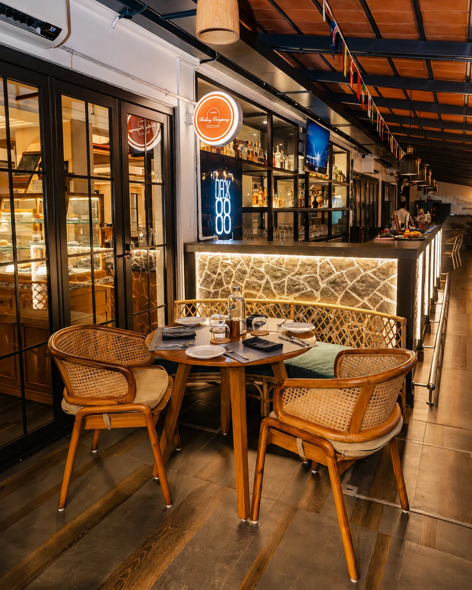
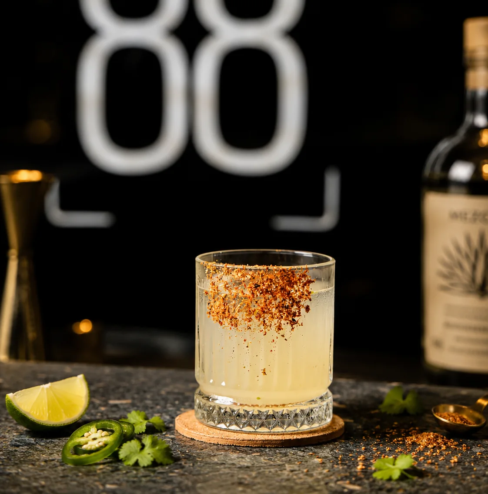
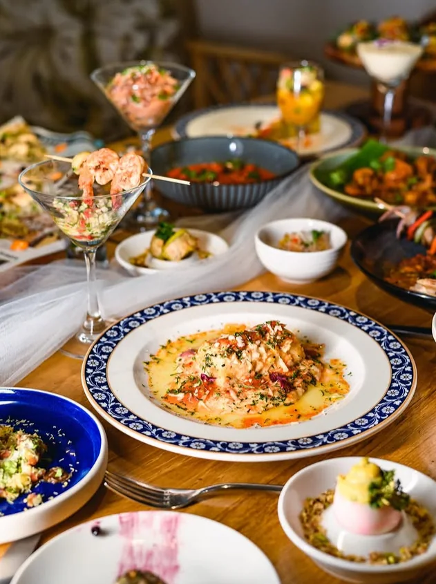
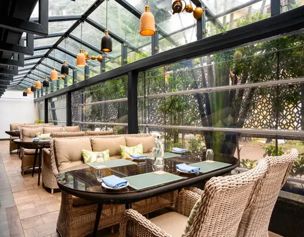
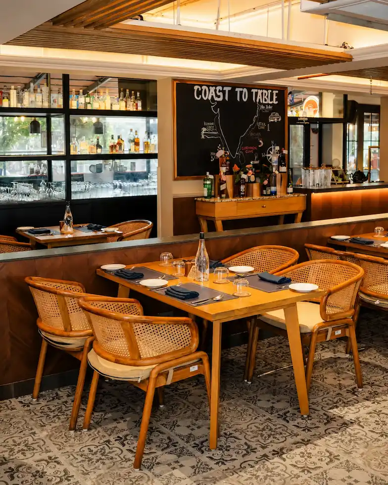
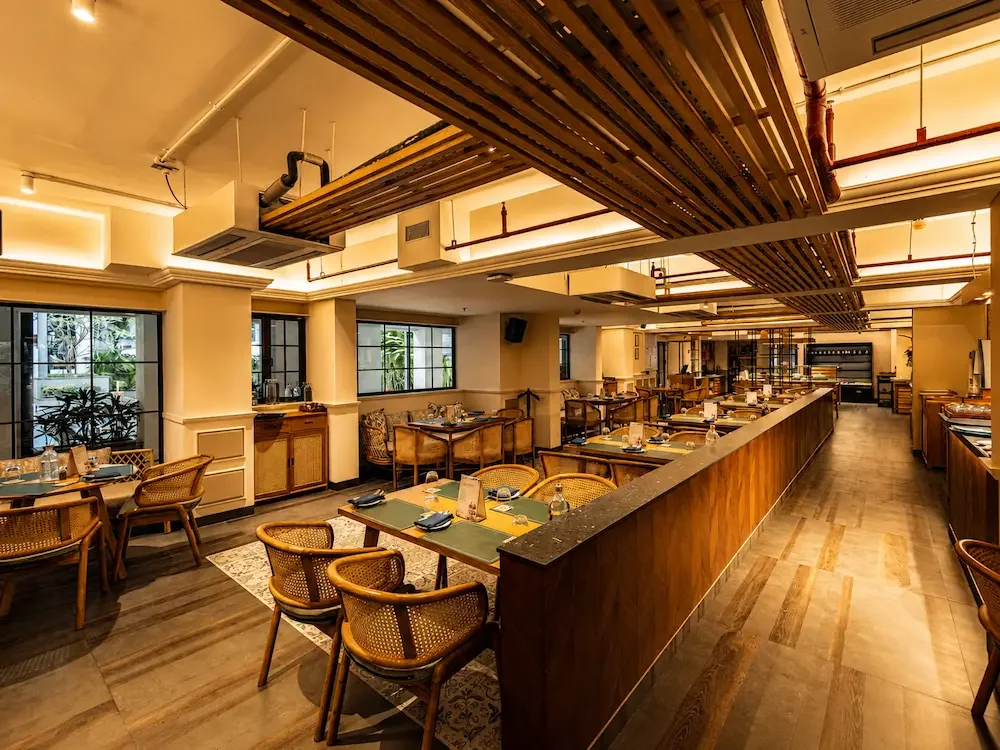
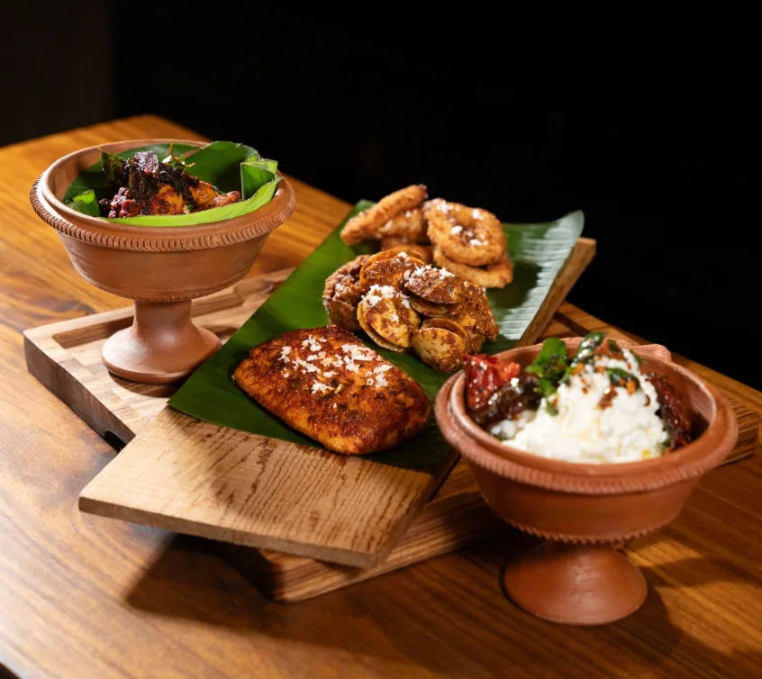

☀
All Day, All Night
Open 24/7, with breakfast served till noon and a table for every mood after.
Find a table →

Global coastal kitchen · Candolim, Goa
A coastal kitchen, bar & bistro made for slow breakfasts, long lunches, generous plates and one-more-drink evenings.
Explore the menu↗

Open 24/7, with breakfast served till noon and a table for every mood after.
Find a table →Goan soul, coastal ingredients and dishes that travel comfortably beyond borders.
Taste the menu →Warm bread, focaccia and oven-fresh comforts woven through the day.
See what’s fresh →Cocktails, coffee and easy-going pours for brunch, sundowners and late conversations.
Stay awhile →

A table for every mood
Deck 88 brings together the warmth of Goa, global coastal flavours and the kind of room that changes character as the day moves on.
Come in for breakfast, return for a long lunch, stay for a cocktail. Cane, timber, warm light and open-air ease keep the atmosphere relaxed while the kitchen keeps things generous and familiar.
“Fresh bakes. Coastal plates. Good times — with a little Goa in every hour.”Discover the Deck ↗
The Deck, through the day
The Deck 88 feeling
“Ease into the day with coffee, warm bakes and breakfast that does not need a deadline. Deck 88 is made for mornings that take their time.”
“By afternoon, the light gets warmer, the plates get passed around and a quick lunch has a habit of turning into sundown.”
“After dark, keep the table. The kitchen stays on, the bar keeps pouring and Deck 88 settles into its late-night rhythm.”


Always on Deck
Your table
Good to know
For breakfast, a celebration, a long lunch or a spontaneous late-night plate, send us your preferred time and we’ll open a WhatsApp request for Deck 88.
Open Every Day
The Deck Number
A little more Deck 88